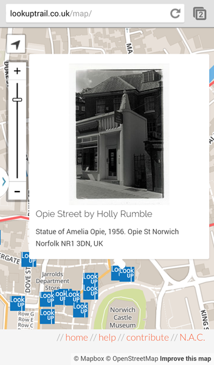

Using the Digital Map.
The digital map is designed to be used on your smart phone or tablet as you go around the city.
You can zoom in and out of the map by using the arrow buttons on the zoom bar.
The arrow button shows your current location on the map - perfect for following our routes!


Launch Map